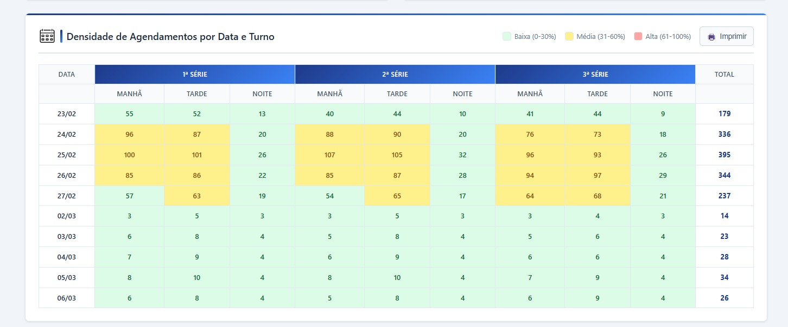
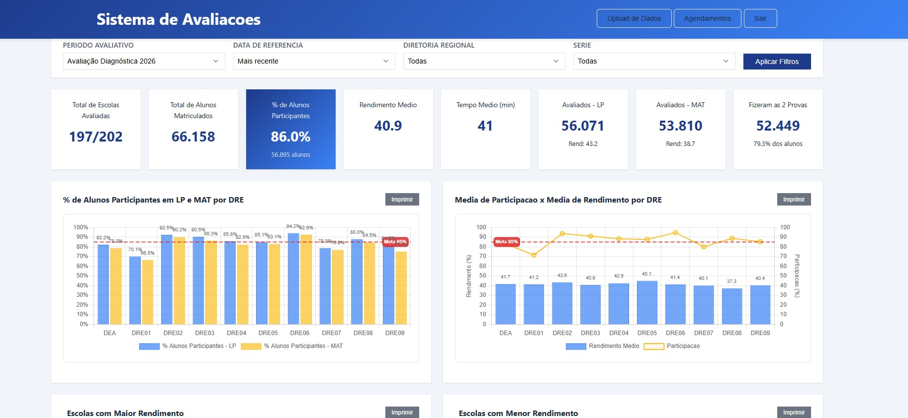

Contexto e Problema
A rede estadual de Sergipe implementou avaliações diagnósticas formativas em parceria com a plataforma Plurall, envolvendo 201 escolas distribuídas em 10 Diretorias Regionais. O ciclo de avaliação — do agendamento à aplicação e consolidação de resultados — exigia um sistema coordenado capaz de gerenciar a logística em centenas de escolas e fornecer visibilidade em tempo real sobre participação e resultados de desempenho.
Imagens do Sistema




Solução Desenvolvida
Desenvolvi uma aplicação web completa em Google Apps Script com arquitetura modular:
- Autenticação e controle de acesso: Sistema de login com três perfis — Administrador (acesso total), DRE/Regional (visão da diretoria) e Escola (agendamento individual)
- Módulo de agendamento: Interface para escolas definirem datas e turnos de aplicação (matutino, vespertino, noturno) para 1ª a 3ª série do Ensino Médio em Língua Portuguesa e Matemática
- Processamento de resultados: Upload de dados brutos das plataformas Plurall e Somos, cruzamento com tabela de mapeamento de escolas (221 escolas, conversão Plurall → código INEP)
- Dashboard de agendamento: Visão consolidada do progresso de agendamentos por diretoria regional
- Dashboard de resultados: Painel analítico com indicadores de desempenho por escola, série e disciplina — taxas de participação, percentuais de desempenho em LP e Matemática, tempos médios de resposta
- Painel administrativo: Gestão de usuários, configurações do sistema e histórico de uploads
O banco de dados foi estruturado em Google Sheets com 7 abas especializadas: DePara (mapeamento de escolas), Acompanhamento, Resultados_Brutos, Resultados_Processados, Historico_Uploads, Config_Resultados e Lista_Noturno.
Bases de Dados Utilizadas
- Tabela de mapeamento — 221 escolas (códigos Plurall ↔ INEP)
- Dados brutos de acompanhamento da plataforma Plurall
- Resultados brutos do sistema Somos
- Dados de configuração de avaliações (períodos, turnos, disciplinas)
Tecnologias Utilizadas
Resultados e Impacto
O sistema viabilizou a coordenação centralizada do agendamento de avaliações diagnósticas em 201 escolas, eliminando processos manuais de consolidação e fornecendo visibilidade em tempo real sobre participação e desempenho dos estudantes. Gestores das Diretorias Regionais e da Secretaria de Educação puderam monitorar os indicadores de desempenho em Língua Portuguesa e Matemática de forma desagregada, subsidiando diretamente decisões pedagógicas e o planejamento de ações de reforço escolar.